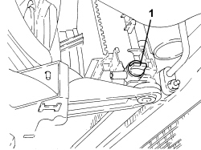
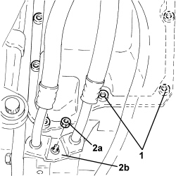
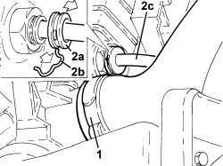
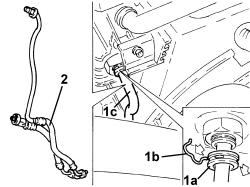
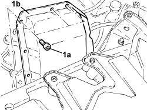

2130B36 AUTOMATIC TRANMISSION VALVE COVER R R
- Path
- Procedures > 21 GEARBOX UNIT > 2130 AUTOMATIC TRANSMISSION WITH DIFFERENTIAL > 2130B AUTOMATIC TRANSMISSION COMPONENTS > 2130B36 AUTOMATIC TRANMISSION VALVE COVER R R
- Kind
- repair procedure (removal / refitting; the operation number is the code)
- Applies to
- engines: 2.2; all production periods; only with equipment: AUTOMATIC TRANSMISSION
- Interactive page
- https://sloeber94.github.io/elrnDB-fCrm/en/#/194002326
Applies to: engines: 2.2; all production periods
 Removing
Removing
 Refitting
Refitting- Position the vehicle on a lift.
Op. 5530B52 BATTERY SUPPORT/DRIP TRAY - R.R
Op. 7055B54 UNDER ENGINE PROTECTION/GUARD - R.R.
Op. 0010T44 CHANGE AUTOMATIC TRANSMISSION FLUIDS
1. Undo the radiator coolant drain plug.

Applies to: engines: 2.2; all production periods
1. Undo the lower bolts fixing the solenoid valve assembly cover.
2. Undo the nut (2a) and disconnect the flange for the radiator oil supply and return pipes (2b) automatic gearbox side.

Applies to: engines: 2.2; all production periods
- Release the electrical wiring from the retaining bands.
1. Loosen the band and disconnect the lower coolant outlet hose from the radiator, radiator side.
2. Retract the safety collar (2a), remove the clip (2b) and disconnect the oil return pipe to the radiator (2c), radiator side.

Applies to: engines: 2.2; all production periods
1. Retract the safety collar (1a), remove the clip (1b) and disconnect the oil supply pipe to the radiator (1c), radiator side.
2. Remove the radiator oil supply and return pipes.

Applies to: engines: 2.2; all production periods
1. Undo remaining upper bolts (1a) and remove the solenoid valve assembly cover (1b).

Applies to: engines: 2.2; all production periods
Refitting
Removing- Clean any residues of sealant from the mating surfaces.
- Apply silicone sealant to the solenoid valve assembly cover, then place it in its housing and secure it tightening the bolts to the recommended torque.
Component | Fastening | dia | Value (daNm) | Validity |
|---|---|---|---|---|
Gear selector solenoid valve cover | Bolt | M8x1.5 | (automatic gearbox side) 1.5 | 2.2 CAE |
- Place the radiator oil supply and return pipes in their housings.
- Connect the radiator oil supply pipe, radiator side and secure it using the clip.
- Connect the radiator oil return pipe, radiator side and secure it using the clip.
- Connect the radiator lower coolant outlet hose, radiator side, and tighten the band.
- Connect the flange for the radiator oil supply and return pipes, automatic gearbox side and secure it using the nut.
- Secure the electrical wiring with the bands.
- Tighten the coolant drain plug to the radiator.
Op. 0010T44 CHANGE AUTOMATIC TRANSMISSION FLUIDS
Op. 7055B54 UNDER ENGINE PROTECTION/GUARD - R.R.
Op. 5530B52 BATTERY SUPPORT/DRIP TRAY - R.R
- Remove the vehicle from the lift.
Topics linked from this page (4)
- 0010T44 CHANGE AUTOMATIC TRANSMISSION FLUIDS
- 5530B10 BATTERY - R+R
- 5530B52 BATTERY SUPPORT/DRIP TRAY - R.R
- 7055B54 UNDER ENGINE PROTECTION/GUARD - R.R.